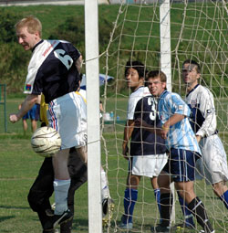
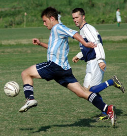
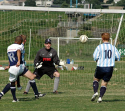

|
Misato, Sun 3rd Sept. More historic significance from the Misato riverside at the weekend. Your scribe maintained his remarkable record of scoring a goal in every decade since the Sudanese and British last lined up ......... etc etc
Frustrated with only 2nd best in every TML catagory last year, I have set my sights unequivocally on this years Golden Boot.
Readers will no doubt want to take note of how the goal transpired in the forlorn hope of replication.
You cannot teach this stuff.
It is art.
I have been doing it since the Sudanese and British last....... etc etc.
It is my job. Its what I do
OK then, warts and all. I sneak upfield for a free kick, really just to put some daylight between me and Kevin Morgan, who frightens me. Its the same as playing in front of Stephen Harmony Bradshaw used to be, you just would prefer to keep them in your line of sight at all times. The red mist descends and it doesnt matter what colour shirt you have on.
Anyway, I'm standing in the BFC 6 yard box hiding from Kev who I'm sure is going to give me a hiding if I let Jon Day go around me one more time. The ball comes through a melee straight at me. By this time I'm 1/2 a knobs length from the line and the ball hits me. The heroic BFC goalie dives and manages to stop it on the line.
As it rolls along the goal line, I dive on top of him and pin him to the floor. In slow motion he can only just reach it with an outstretched arm, which he does and bats it agonizingly across the line.
1-0! I dont have a celebration prepared. The BFC defence are standing agape, witnesses to history, my teammates have long since retreated to the half way line, Pietro is doing his nails, and I am YCACs top goalscorer.
Kev glares at me when I finally trot back to my position. "Good decision to send me up Kev" and he lets it pass
The rest of the game, if youre interested; The BFC, as rumoured, are indeed a decent outfit and have no obvious weaknesses (though their keeper isnt at his best when pinned to the floor). YCAC were under the cosh for large parts of the game and BFC looked to have it won with goals either side of HT especially after Anthony got himself sent off and YCAC were down to 10. Never say die James Absolom snuck an equalizer right at the death, however, as 3 BFC defenders and a Goalie fought successfully to leave a ball into the 6 yard box to each other. 2-2, honours even but BFC have possibly deserved more though its a very close `and hard fought game
A 4th and final mention for Kevin Morgan who was outstanding and had to be with Damian out sick and Dickie injured on international duty with the H*bs (Compensation claim to follow)
Commiserations to Jon Day who wont have long to wait for his 1st win as skipper on sundays showing.
Report – Steve Taw
|